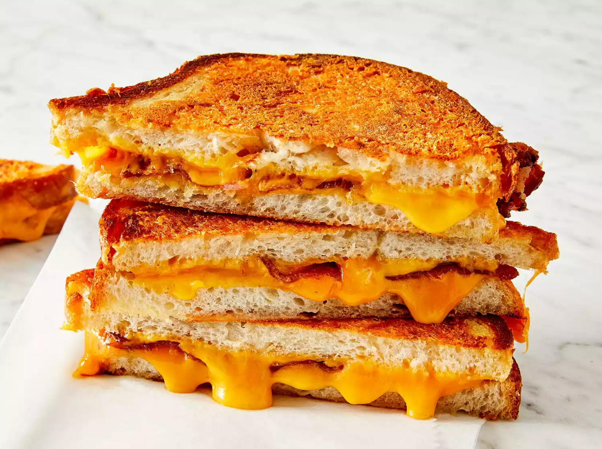

Grilled Cheese "of the gods"

Description
This is a twist on the classic grilled cheese, and I must say,
this is one of the best I've ever had! This easy recipe has
a crispy parmesan crust, a gooey cheddar and a bacon filling.
Despite the simple exterior, the flavors here are killer, and
goes great with a tomato soup, if you have one! Takes about 15
minutes, so not much of a time commitment to make this one either!
Ingredients
- 1/16th cup butter, softened
- 1/4th cup freshly grated Parmigiano-Reggiano cheese
- 2 slices cooked bacon
- 1+ slice cheddar cheese
- 2 slices sourbough bread
Steps
- Mash together butter and Parmesan cheese in a small bowl until evenly blended.
- Make sandwiches by placing two slices of bacon and one slice of Cheddar cheese on half of the bread slices. Top with the remaining slices of bread.
- Heat a large skillet over medium heat. Spread some of the butter mixture on the top of each sandwich. Place sandwiches butter side down in the skillet. Spread the remaining butter mixture on the other sides. Cook until golden brown on each side, about 3 minutes per side.
- To serve, cut in half diagonally.
Home